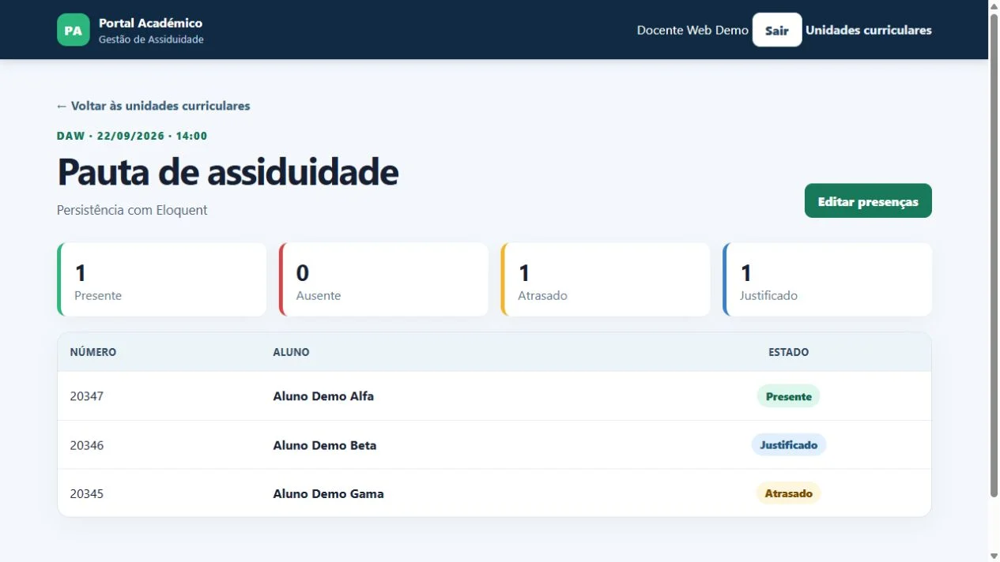

Engineering project · Runtime screenshot
Academic Portal / Portal Académico
Course-scoped teacher access and attendance recording in a Laravel application.
Local demonstration · Static runtime preview
View GitHub source
Problem
Attendance updates must validate the enrolled roster and restrict teachers to assigned courses.
Architecture
Laravel session authentication protects Blade attendance views. Assignment checks run on the server; transactional writes and unique student/class keys preserve record integrity.
Engineering decisions
- Reuse Laravel sessions and hashed passwords.
- Apply one course-context policy to viewing, editing and direct submissions.
- Validate the complete enrollment roster before a transaction.
Implemented workflow
- Teacher sign-in/logout and assigned-course dashboard.
- Record present, absent, late or excused; review and correct saved attendance.
Checks and evidence
10 tests with 68 assertions plus cross-teacher denial, browser logout, mobile and restart checks passed.
- Verification describes the prepared local checkout on 28–29 October 2026; it is not a production or business outcome claim.
- Prepared improvements have not been pushed; the public repository may differ from this runtime preview.
Scope and next steps
- Local demo uses fictional students and SQLite; no institutional deployment or endorsement is claimed.
- No account administration, password recovery, MFA, change audit history or concurrent-edit resolution.
- Individual/group coursework context and exact personal contribution are unconfirmed.
Technology
Laravel · PHP · Blade · SQLite · Eloquent
Preview availability
Screenshots show the prepared local version. Hosted demos remain pending, and source access may require permission. Local setup requirements and remaining limits are documented above.
← Return to portfolio